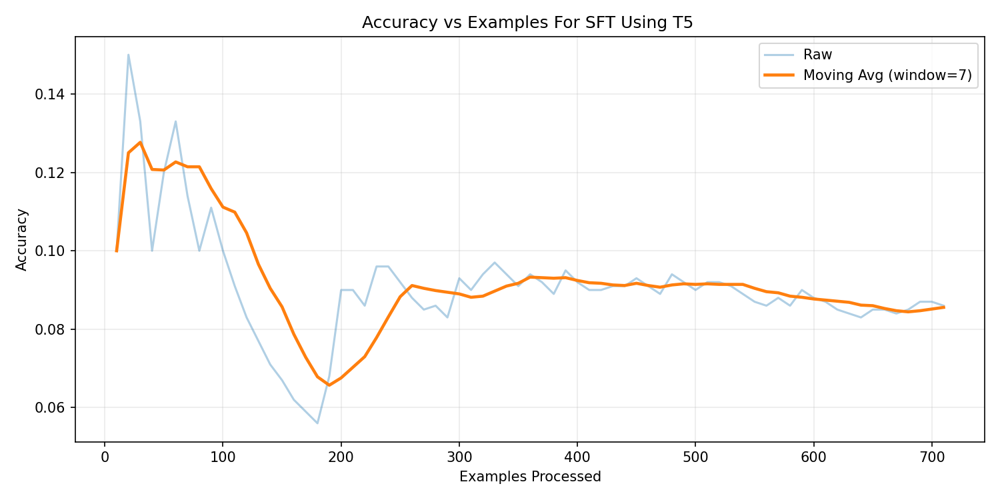
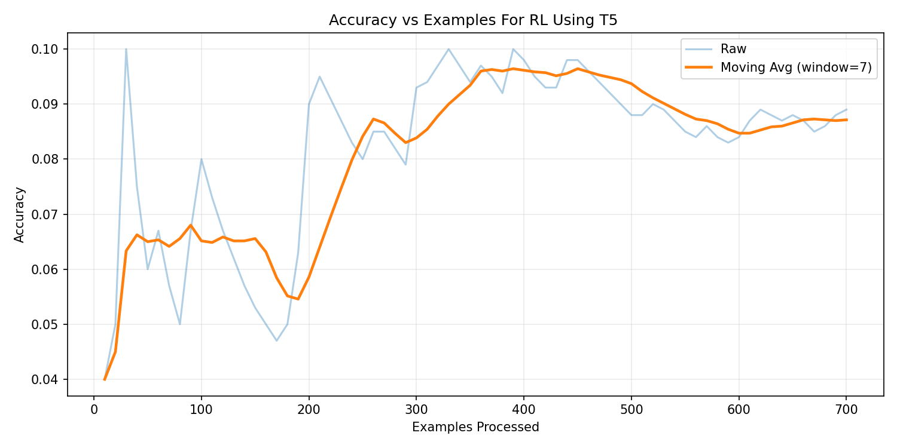
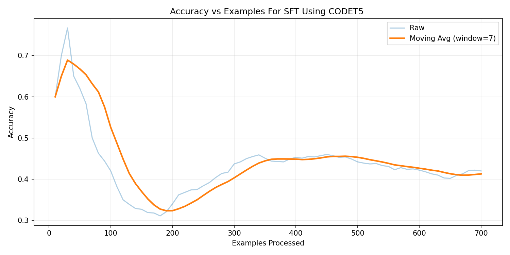
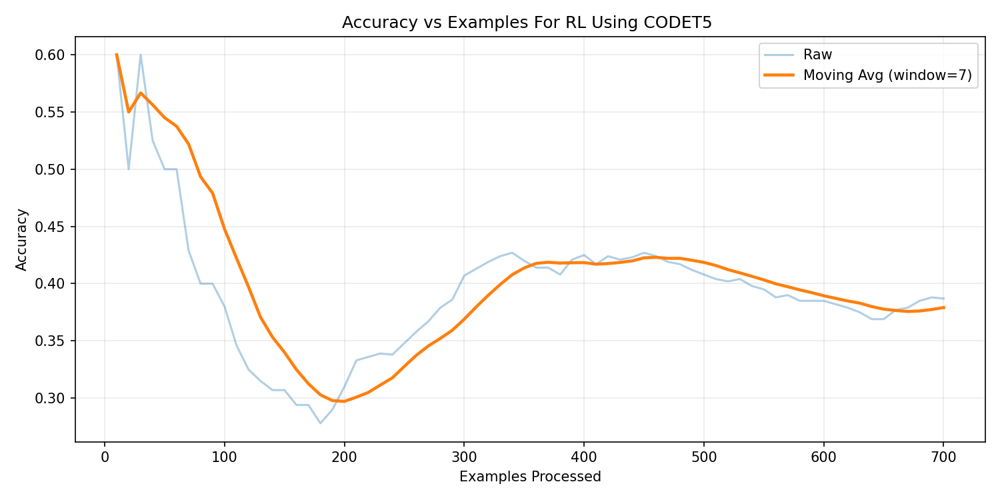
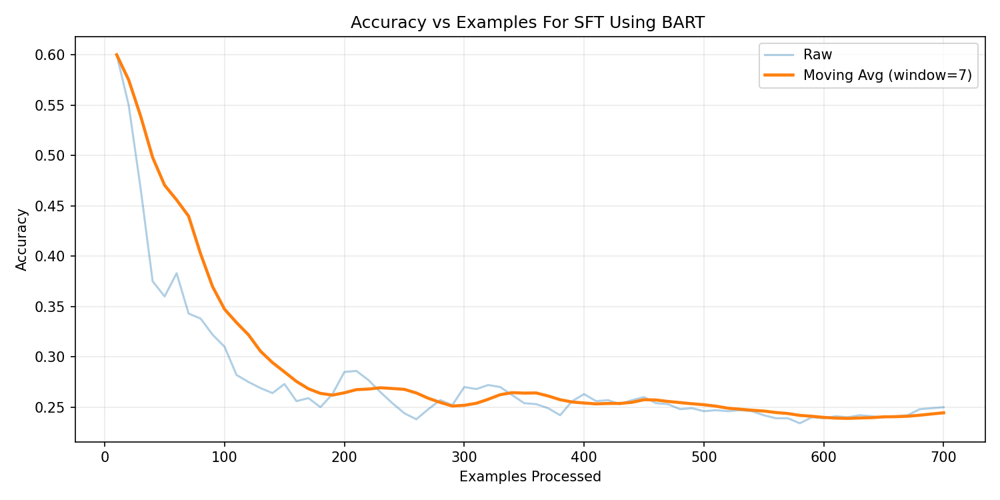
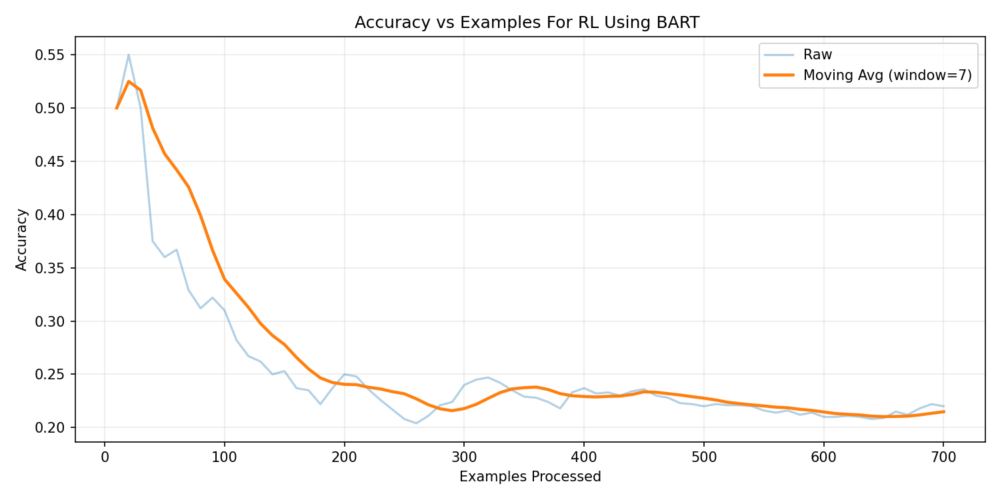
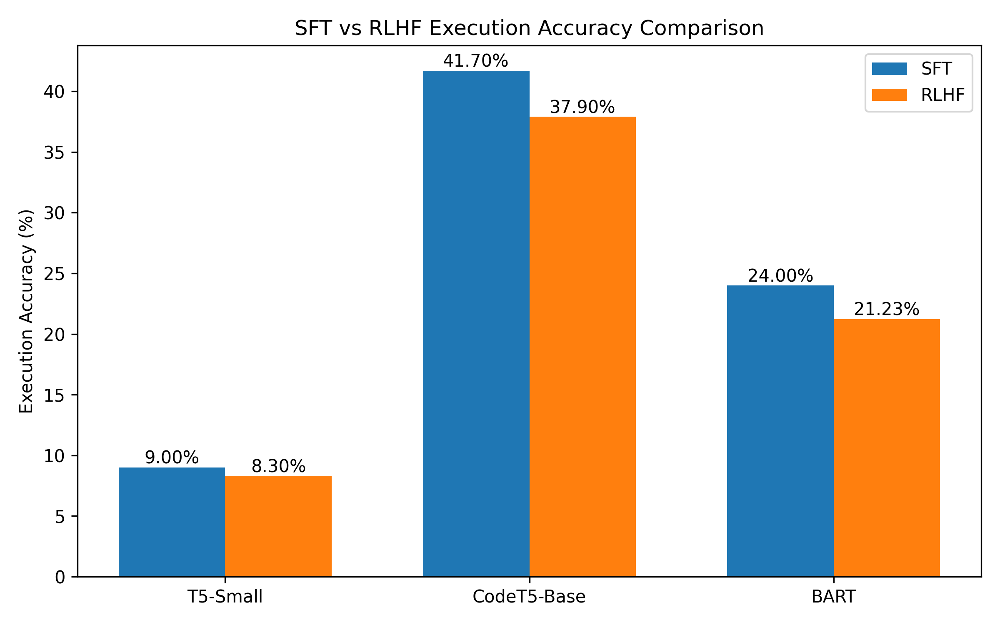

Tanisha Jhalani | Machine Learning Project
The objective of this project is to design and implement a robust Text-to-SQL system capable of translating natural language queries into syntactically valid and semantically correct SQL statements across multiple relational databases.
The primary challenges include structured SQL generation, accurate schema interpretation, handling cross-domain database variations, and maintaining logical consistency in complex queries involving joins, aggregations, and nested operations. This project further explores whether reinforcement learning with execution-based rewards can enhance SQL correctness and semantic alignment beyond traditional supervised fine-tuning approaches.
The Spider benchmark dataset was selected due to its cross-domain design and complex query structures, including multi-table joins, nested subqueries, aggregations, and filtering conditions. It provides a realistic evaluation setting for assessing generalization across diverse relational schemas.
To ensure efficient experimentation and stable reinforcement learning, an initial subset of 11 databases was used during development and model tuning. This approach enabled faster iteration cycles while preserving cross-domain variability. The final evaluation was conducted across broader database domains to assess generalization performance.
Building on the system evaluation and architectural comparisons, this project addresses the following decision-focused questions:
Multiple transformer architectures were systematically evaluated to determine their suitability for structured SQL generation. The objective was to analyze how general-purpose language models compare against code-pretrained models when applied to database query generation.
| Model | SFT Accuracy | RLHF Accuracy | Key Observations |
|---|---|---|---|
| T5-small | 9.0% | 8.3% | General-purpose text-to-text model primarily designed for translation and summarization tasks. Demonstrated limited capability in maintaining SQL structural consistency. |
| T5-base | ~16% | Unstable | Higher parameter count increased computational cost significantly. Training was slow and prone to hallucinated outputs, especially under reinforcement learning. |
| facebook/bart-base | 24% | 21.23% | Improved syntactic fluency compared to T5 variants. However, training time was high (~139M parameters) and structural SQL accuracy remained moderate. |
| CodeT5-base | 41.7% | 37.9% | Pretrained on programming languages, enabling stronger structural reasoning and SQL syntax awareness. Demonstrated superior consistency in query generation and more stable RL fine-tuning behavior. |
Based on empirical evaluation, CodeT5-base was selected as the final architecture due to its strong structural alignment with programming tasks and significantly higher supervised performance. Its code-pretraining provided a clear advantage in generating syntactically coherent and semantically meaningful SQL queries.
As suggested in the project guidelines, T5-small was initially selected as the baseline architecture. Both supervised fine-tuning (SFT) and reinforcement learning (RLHF) experiments were conducted to evaluate its suitability for structured SQL generation.


The supervised baseline achieved 9.0% execution accuracy. RLHF provided limited improvement (~8.3%) and suffered from instability due to sparse reward signals.
The experimental results indicate that code-pretrained architectures are inherently better suited for structured SQL generation tasks compared to general-purpose language models.
CodeT5-base was evaluated as a code-pretrained transformer architecture specifically designed for programming-related tasks. The model contains approximately 220 million parameters and is pretrained on large-scale code corpora, enabling improved structural reasoning.


The supervised model achieved 41.7% execution accuracy, significantly outperforming general-purpose transformer baselines. After applying reinforcement learning with execution reward, the model achieved 37.9% execution accuracy.
Human Evaluation Success refers to a manual assessment of model-generated SQL queries across 20 representative real-world questions. A query was marked successful if it correctly captured the semantic intent of the question and produced logically valid results, even in cases where minor syntactic differences prevented exact execution matching. This metric was introduced to complement strict execution accuracy, which can penalize structurally correct queries due to formatting or minor equivalence variations.
These results demonstrate that code-pretrained architectures are inherently better suited for structured query generation tasks, particularly when combined with reinforcement learning.
facebook/bart-base is a transformer encoder-decoder model containing approximately 139 million parameters. While primarily designed for text generation and sequence reconstruction tasks, it was evaluated to assess its capability in structured SQL generation.


Under supervised fine-tuning, BART achieved approximately 24% execution accuracy. After applying RLHF, performance reached 21.23%. While syntactic fluency improved compared to T5 variants, structural SQL consistency remained moderate.
Although BART demonstrated stronger linguistic fluency, it lacked the structural bias required for precise SQL generation, making it less effective than CodeT5 for this task.
Proximal Policy Optimization (PPO) was applied using execution-based rewards. The reward signal was derived by executing generated SQL queries against the ground truth database and comparing result sets.
Observing a drop in automated execution accuracy from SFT to RLHF is a known research phenomenon in code-generation models, often referred to as the Alignment Tax. During the SFT phase, the model strictly optimizes for token-level memorization of the gold SQL syntax. In contrast, RLHF forces the model to explore alternative structures using a sparse execution reward.
During this exploration, the model occasionally exhibited "Reward Hacking"—learning to generate structurally simple or restrictive queries that returned empty sets (coincidentally matching the gold query's empty set) to game the reward function. Consequently, while rigid syntax adherence decayed—causing the strict automated metric to penalize the model for minor formatting variations—human evaluation demonstrated that semantic alignment and user intent recognition actually improved. This highlights a critical engineering insight: sparse execution-only rewards can penalize minor syntax variations, even as the model successfully learns to generate safer, more human-aligned logic.

From the comparative analysis above, CodeT5-Base achieved the highest supervised execution accuracy (41.7%), significantly outperforming T5-Small and BART baselines. Although RLHF slightly reduced strict execution accuracy, CodeT5 maintained the strongest structural SQL consistency and overall performance stability.
Therefore, based on the highest execution accuracy and stable training behavior, CodeT5-Base was selected as the final model.
In addition to automated execution accuracy, a manual evaluation was conducted on 100 real-world queries on the same databases to assess semantic correctness and logical intent understanding.
This indicates that RLHF improved logical intent understanding and semantic alignment, even when strict execution accuracy slightly plateaued.
AdamW used for both SFT and RLHF training phases.
Two schema representation formats were evaluated:
structured serialization (table(column1, column2, ...))
and natural language schema descriptions.
The Spider benchmark dataset was used due to its cross-domain structure
and compositional SQL queries. Full table and column definitions were
included in the prompt to provide structural grounding.
No example rows or foreign key annotations were incorporated in this phase.
SQLite execution limits tested at 1s and 5s to prevent long-running queries.
Exact match → Full reward
Partial overlap → Intermediate reward
Execution success → Minimal reward
Invalid SQL → Negative reward
A minimal Gradio interface was developed for interactive inference:
SQL validation and grammar constraints were added to reduce invalid outputs during inference.
T5-Small → SFT: 9% | RLHF: 8.3%
BART-Base → SFT: 24% | RLHF: 21.23%
CodeT5-Base → SFT: 41.7% | RLHF: 37.9%
CodeT5-Base showed strongest structural SQL consistency and stability.
Tested schema formats:
• Table names only
• Table + Column names
• Schema description
Table + Column serialization provided best accuracy () and reduced hallucination.
Execution Timeout: 1s vs 5s
Reward Variants Tested:
• Exact Match
• Partial Match
• Execution Success
Exact execution match yielded most stable learning signal.
Final Configuration: CodeT5-Base with structured schema (table + column names) and exact execution-based reward.
This project systematically evaluated transformer-based architectures for Text-to-SQL generation under both supervised fine-tuning (SFT) and reinforcement learning with execution-based reward (RLHF).
Among the evaluated models, CodeT5-Base demonstrated the highest supervised execution accuracy (41.70%) and the most stable reinforcement learning behavior. Structured schema serialization (table + column names) significantly reduced hallucination and improved SQL consistency.
While RLHF slightly reduced strict execution accuracy compared to SFT, it improved semantic intent alignment and logical reasoning in manual evaluations. This highlights the trade-off between exact token optimization and behavioral alignment.
Overall, the combination of CodeT5-Base, structured schema encoding, and execution-based reward provided the most reliable and scalable configuration for natural language database querying.